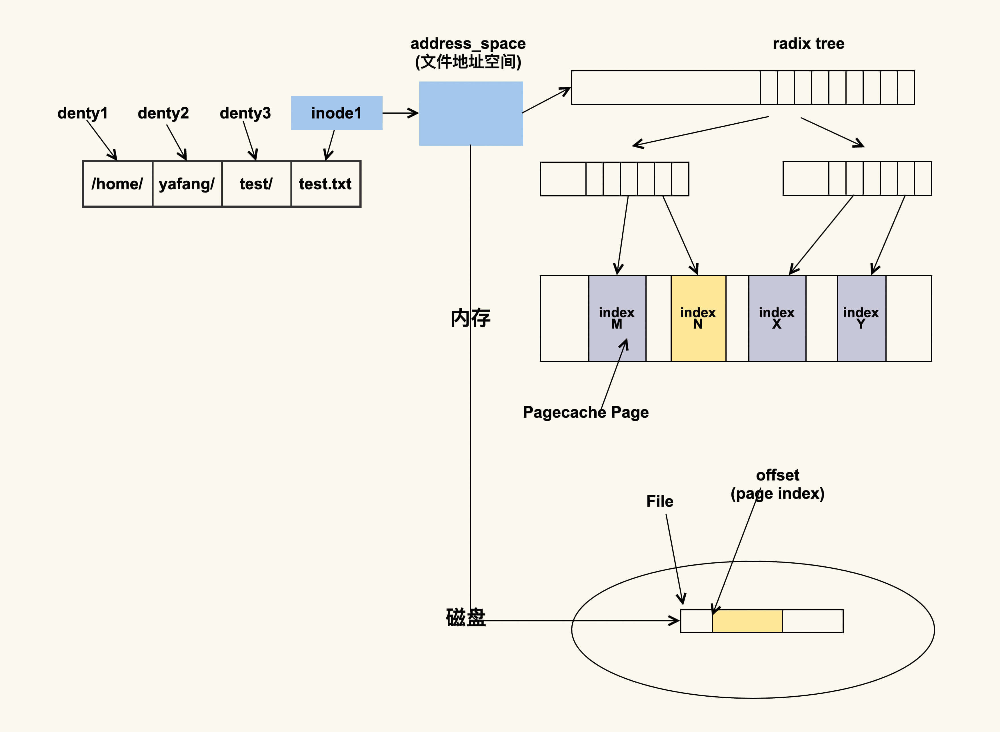
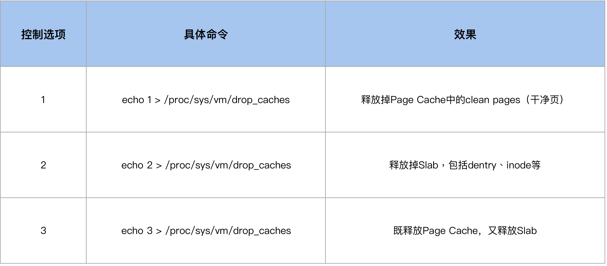
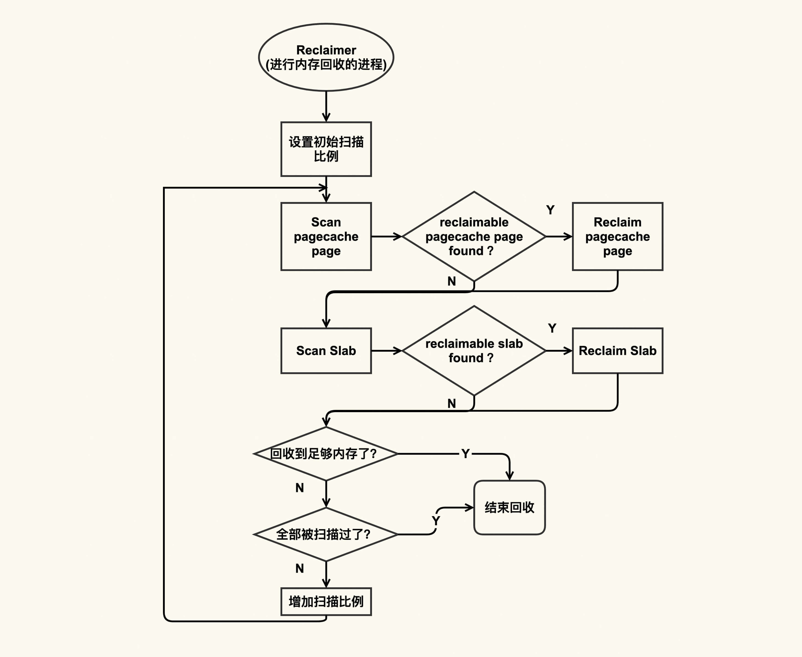
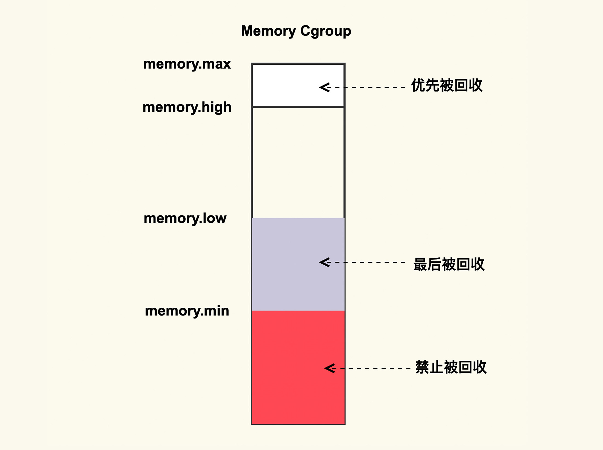

- 00 开篇词 如何让Linux内核更好地服务应用程序？.md.html
- 01 基础篇 如何用数据观测Page Cache？.md.html
- 02 基础篇 Page Cache是怎样产生和释放的？.md.html
- 03 案例篇 如何处理Page Cache难以回收产生的load飙高问题？.md.html
- 04 案例篇 如何处理Page Cache容易回收引起的业务性能问题？.md.html
- 05 分析篇 如何判断问题是否由Page Cache产生的？.md.html
- 06 基础篇 进程的哪些内存类型容易引起内存泄漏？.md.html
- 07 案例篇 如何预防内存泄漏导致的系统假死？.md.html
- 08 案例篇 Shmem：进程没有消耗内存，内存哪去了？.md.html
- 09 分析篇 如何对内核内存泄漏做些基础的分析？.md.html
- 10 分析篇 内存泄漏时，我们该如何一步步找到根因？.md.html
- 11 基础篇 TCP连接的建立和断开受哪些系统配置影响？.md.html
- 12 基础篇 TCP收发包过程会受哪些配置项影响？.md.html
- 13 案例篇 TCP拥塞控制是如何导致业务性能抖动的？.md.html
- 14 案例篇 TCP端到端时延变大，怎样判断是哪里出现了问题？.md.html
- 15 分析篇 如何高效地分析TCP重传问题？.md.html
- 16 套路篇 如何分析常见的TCP问题？.md.html
- 17 基础篇 CPU是如何执行任务的？.md.html
- 18 案例篇 业务是否需要使用透明大页：水可载舟，亦可覆舟？.md.html
- 19 案例篇 网络吞吐高的业务是否需要开启网卡特性呢？.md.html
- 20 分析篇 如何分析CPU利用率飙高问题 ？.md.html
- 加餐 我是如何使用tracepoint来分析内核Bug的？.md.html
- 结束语 第一次看内核代码，我也很懵逼.md.html
- 捐赠
04 案例篇 如何处理Page Cache容易回收引起的业务性能问题？
你好，我是邵亚方。我们在前一节课讲了Page Cache难以回收导致的load飙高问题，这类问题是很直观的，相信很多人都遭遇过。这节课，我们则是来讲相反的一些问题，即Page Cache太容易回收而引起的一些问题。
这类问题因为不直观所以陷阱会很多，应用开发者和运维人员会更容易踩坑，也正因为这类问题不直观，所以他们往往是一而再再而三地中招之后，才搞清楚问题到底是怎么回事。
我把大家经常遇到的这类问题做个总结，大致可以分为两方面：
- 误操作而导致Page Cache被回收掉，进而导致业务性能下降明显；
- 内核的一些机制导致业务Page Cache被回收，从而引起性能下降。
如果你的业务对Page Cache比较敏感，比如说你的业务数据对延迟很敏感，或者再具体一点，你的业务指标对TP99（99分位）要求较高，那你对于这类性能问题应该多多少少有所接触。当然，这并不意味着业务对延迟不敏感，你就不需要关注这些问题了，关注这类问题会让你对业务行为理解更深刻。
言归正传，我们来看下发生在生产环境中的案例。
对Page Cache操作不当产生的业务性能下降
我们先从一个相对简单的案例说起，一起分析下误操作导致Page Cache被回收掉的情况，它具体是怎样发生的。
我们知道，对于Page Cache而言，是可以通过drop_cache来清掉的，很多人在看到系统中存在非常多的Page Cache时会习惯使用drop_cache来清理它们，但是这样做是会有一些负面影响的，比如说这些Page Cache被清理掉后可能会引起系统性能下降。为什么？
其实这和inode有关，那inode是什么意思呢？inode是内存中对磁盘文件的索引，进程在查找或者读取文件时就是通过inode来进行操作的，我们用下面这张图来表示一下这种关系：

如上图所示，进程会通过inode来找到文件的地址空间（address_space），然后结合文件偏移（会转换成page index）来找具体的Page。如果该Page存在，那就说明文件内容已经被读取到了内存；如果该Page不存在那就说明不在内存中，需要到磁盘中去读取。你可以理解为inode是Pagecache Page（页缓存的页）的宿主（host），如果inode不存在了，那么PageCache Page也就不存在了。
如果你使用过drop_cache来释放inode的话，应该会清楚它有几个控制选项，我们可以通过写入不同的数值来释放不同类型的cache（用户数据Page Cache，内核数据Slab，或者二者都释放），这些选项你可以去看Kernel Documentation的描述。

于是这样就引入了一个容易被我们忽略的问题：当我们执行echo 2来drop slab的时候，它也会把Page Cache给drop掉，很多运维人员都会忽视掉这一点。
在系统内存紧张的时候，运维人员或者开发人员会想要通过drop_caches的方式来释放一些内存，但是由于他们清楚Page Cache被释放掉会影响业务性能，所以就期望只去drop slab而不去drop pagecache。于是很多人这个时候就运行 echo 2 > /proc/sys/vm/drop_caches，但是结果却出乎了他们的意料：Page Cache也被释放掉了，业务性能产生了明显的下降。
很多人都遇到过这个场景：系统正在运行着，忽然Page Cache被释放掉了，由于不清楚释放的原因，所以很多人就会怀疑，是不是由其他人/程序执行了drop_caches导致的。那有没有办法来观察这个inode释放引起Page Cache被释放的行为呢？答案是有的。关于这一点，我们在下一节课会讲到。我们先来分析下如何观察是否有人或者有程序执行过drop_caches。
由于drop_caches是一种内存事件，内核会在/proc/vmstat中来记录这一事件，所以我们可以通过/proc/vmstat来判断是否有执行过drop_caches。
$ grep drop /proc/vmstat
drop_pagecache 3
drop_slab 2
如上所示，它们分别意味着pagecache被drop了3次（通过echo 1 或者echo 3），slab被drop了2次（通过echo 2或者echo 3）。如果这两个值在问题发生前后没有变化，那就可以排除是有人执行了drop_caches；否则可以认为是因为drop_caches引起的Page Cache被回收。
针对这类问题，你除了在执行drop cache前三思而后行之外，还有其他的一些根治的解决方案。在讲这些解决方案之前，我们先来看一个更加复杂一点的案例，它们有一些共性，解决方案也类似，只是接下来这个案例涉及的内核机制更加复杂。
内核机制引起Page Cache被回收而产生的业务性能下降
我们在前面已经提到过，在内存紧张的时候会触发内存回收，内存回收会尝试去回收reclaimable（可以被回收的）内存，这部分内存既包含Page Cache又包含reclaimable kernel memory(比如slab)。我们可以用下图来简单描述这个过程：

我简单来解释一下这个图。Reclaimer是指回收者，它可以是内核线程（包括kswapd）也可以是用户线程。回收的时候，它会依次来扫描pagecache page和slab page中有哪些可以被回收的，如果有的话就会尝试去回收，如果没有的话就跳过。在扫描可回收page的过程中回收者一开始扫描的较少，然后逐渐增加扫描比例直至全部都被扫描完。这就是内存回收的大致过程。
接下来我所要讲述的案例就发生在“relcaim slab”中，我们从前一个案例已然知道，如果inode被回收的话，那么它对应的Page Cache也都会被回收掉，所以如果业务进程读取的文件对应的inode被回收了，那么该文件所有的Page Cache都会被释放掉，这也是容易引起性能问题的地方。
那这个行为是否有办法观察？这同样也是可以通过/proc/vmstat来观察的，/proc/vmstat简直无所不能（这也是为什么我会在之前说内核开发者更习惯去观察/proc/vmstat）。
$ grep inodesteal /proc/vmstat
pginodesteal 114341
kswapd_inodesteal 1291853
这个行为对应的事件是inodesteal，就是上面这两个事件，其中kswapd_inodesteal是指在kswapd回收的过程中，因为回收inode而释放的pagecache page个数；pginodesteal是指kswapd之外其他线程在回收过程中，因为回收inode而释放的pagecache page个数。所以在你发现业务的Page Cache被释放掉后，你可以通过观察来发现是否因为该事件导致的。
在明白了Page Cache被回收掉是如何发生的，以及知道了该如何观察之后，我们来看下该如何解决这类问题。
如何避免Page Cache被回收而引起的性能问题？
我们在分析一些问题时，往往都会想这个问题是我的模块有问题呢，还是别人的模块有问题。也就是说，是需要修改我的模块来解决问题还是需要修改其他模块来解决问题。与此类似，避免Page Cache里相对比较重要的数据被回收掉的思路也是有两种：
- 从应用代码层面来优化；
- 从系统层面来调整。
从应用程序代码层面来解决是相对比较彻底的方案，因为应用更清楚哪些Page Cache是重要的，哪些是不重要的，所以就可以明确地来对读写文件过程中产生的Page Cache区别对待。比如说，对于重要的数据，可以通过mlock(2)来保护它，防止被回收以及被drop；对于不重要的数据（比如日志），那可以通过madvise(2)告诉内核来立即释放这些Page Cache。
我们来看一个通过mlock(2)来保护重要数据防止被回收或者被drop的例子：
#include <sys/mman.h>
#include <sys/types.h>
#include <sys/stat.h>
#include <unistd.h>
#include <string.h>
#include <fcntl.h>
#define FILE_NAME "/home/yafang/test/mmap/data"
#define SIZE (1024*1000*1000)
int main()
{
int fd;
char *p;
int ret;
fd = open(FILE_NAME, O_CREAT|O_RDWR, S_IRUSR|S_IWUSR);
if (fd < 0)
return -1;
/* Set size of this file */
ret = ftruncate(fd, SIZE);
if (ret < 0)
return -1;
/* The current offset is 0, so we don't need to reset the offset. */
/* lseek(fd, 0, SEEK_CUR); */
/* Mmap virtual memory */
p = mmap(0, SIZE, PROT_READ|PROT_WRITE, MAP_FILE|MAP_SHARED, fd, 0);
if (!p)
return -1;
/* Alloc physical memory */
memset(p, 1, SIZE);
/* Lock these memory to prevent from being reclaimed */
mlock(p, SIZE);
/* Wait until we kill it specifically */
while (1) {
sleep(10);
}
/*
* Unmap the memory.
* Actually the kernel will unmap it automatically after the
* process exits, whatever we call munamp() specifically or not.
*/
munmap(p, SIZE);
return 0;
}
在这个例子中，我们通过mlock(2)来锁住了读FILE_NAME这个文件内容对应的Page Cache。在运行上述程序之后，我们来看下该如何来观察这种行为：确认这些Page Cache是否被保护住了，被保护了多大。这同样可以通过/proc/meminfo来观察:
$ egrep "Unevictable|Mlocked" /proc/meminfo
Unevictable: 1000000 kB
Mlocked: 1000000 kB
然后你可以发现，drop_caches或者内存回收是回收不了这些内容的，我们的目的也就达到了。
在有些情况下，对应用程序而言，修改源码是件比较麻烦的事，如果可以不修改源码来达到目的那就最好不过了。Linux内核同样实现了这种不改应用程序的源码而从系统层面调整来保护重要数据的机制，这个机制就是memory cgroup protection。
它大致的思路是，将需要保护的应用程序使用memory cgroup来保护起来，这样该应用程序读写文件过程中所产生的Page Cache就会被保护起来不被回收或者最后被回收。memory cgroup protection大致的原理如下图所示：

如上图所示，memory cgroup提供了几个内存水位控制线memory.{min, low, high, max} 。
memory.max- 这是指memory cgroup内的进程最多能够分配的内存，如果不设置的话，就默认不做内存大小的限制。
memory.high- 如果设置了这一项，当memory cgroup内进程的内存使用量超过了该值后就会立即被回收掉，所以这一项的目的是为了尽快的回收掉不活跃的Page Cache。
memory.low- 这一项是用来保护重要数据的，当memory cgroup内进程的内存使用量低于了该值后，在内存紧张触发回收后就会先去回收不属于该memory cgroup的Page Cache，等到其他的Page Cache都被回收掉后再来回收这些Page Cache。
memory.min- 这一项同样是用来保护重要数据的，只不过与memoy.low有所不同的是，当memory cgroup内进程的内存使用量低于该值后，即使其他不在该memory cgroup内的Page Cache都被回收完了也不会去回收这些Page Cache，可以理解为这是用来保护最高优先级的数据的。
那么，如果你想要保护你的Page Cache不被回收，你就可以考虑将你的业务进程放在一个memory cgroup中，然后设置memory.{min,low} 来进行保护；与之相反，如果你想要尽快释放你的Page Cache，那你可以考虑设置memory.high来及时的释放掉不活跃的Page Cache。
更加细节性的一些设置我们就不在这里讨论了，我建议你可以自己动手来设置后观察一下，这样你理解会更深刻。
课堂总结
我们在前一篇讲到了Page Cache回收困难引起的load飙高问题，这也是很直观的一类问题；在这一篇讲述的则是一类相反的问题，即Page Cache太容易被回收而引起的一些问题，这一类问题是不那么直观的一类问题。
对于很直观的问题，我们相对比较容易去观察分析，而且由于它们比较容易观察，所以也相对能够得到重视；对于不直观的问题，则不是那么容易观察分析，相对而言它们也容易被忽视。
外在的特征不明显，并不意味着它产生的影响不严重，就好比皮肤受伤流血了，我们知道需要立即止血这个伤病也能很容易得到控制；如果是内伤，比如心肝脾肺肾有了问题，则容易被忽视，但是这些问题一旦积压久了往往造成很严重的后果。所以对于这类不直观的问题，我们还是需要去重视它，而且尽量做到提前预防，比如说：
- 如果你的业务对Page Cache所造成的延迟比较敏感，那你最好可以去保护它，比如通过mlock或者memory cgroup来对它们进行保护；
- 在你不明白Page Cache是因为什么原因被释放时，你可以通过/proc/vmstat里面的一些指标来观察，找到具体的释放原因然后再对症下药的去做优化。
课后作业
这节课给你布置的作业是与mlock相关的，请你思考下，进程调用mlock()来保护内存，然后进程没有运行munlock()就退出了，在进程退出后，这部分内存还被保护吗，为什么？欢迎在留言区分享你的看法。
感谢你的阅读，如果你认为这节课的内容有收获，也欢迎把它分享给你的朋友，我们下一讲见。
© 2019 - 2023 Liangliang Lee. Powered by gin and hexo-theme-book.